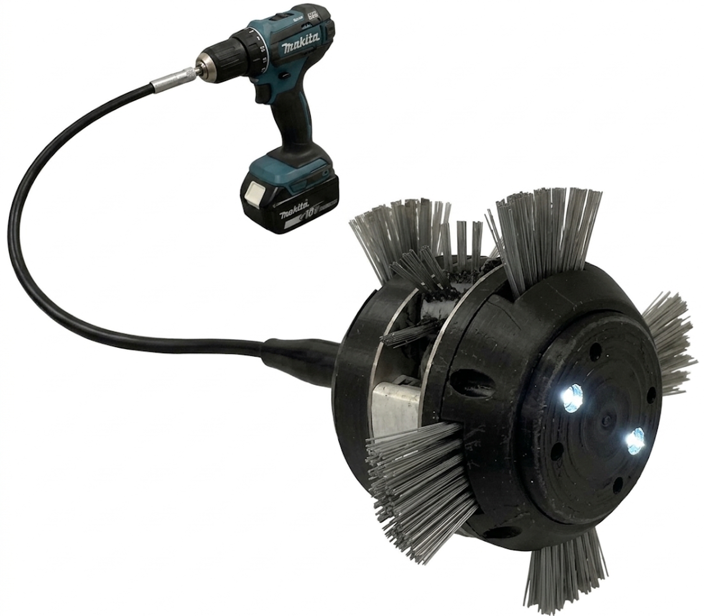

01
REQUIREMENTS
実環境で求められた3つの条件
- Requirement 1清掃率80%以上
東京消防庁および日本空調システムクリーニング協会による清掃基準を踏まえた要求仕様。
- Requirement 2直角ダクトの通過
清掃が困難な曲がり部分を通過し、その先のダクト内部まで清掃できること。
- Requirement 3障害物を有するダクト内の通過
接続部から突出したビスを受け流しながら通過し、清掃できること。

RESEARCH & PERSONAL PORTFOLIO 2026
岡本 拓実
中央大学大学院 理工学研究科 精密工学専攻
東京消防庁を含む計5社との共同研究を通じ、清掃現場の課題解決と人々の安全に貢献するための厨房排気ダクト清掃装置を開発しています。
対話を大切に、相手や物事への理解を深め、自ら未知の環境へ踏み出す。
研究への探究心に加え、スポーツで培った挑戦心、11か国への旅行、4年間の接客経験、国内外での発表経験を通して、多様な相手と向き合い、考えを伝えながら行動する力を磨いてきました。
人が入れない厨房排気ダクトに対し、遊星歯車機構とフレキシブルシャフトを用いて、高粘性油塵を除去・回収する清掃装置を開発しています。
実環境で求められた3つの条件
東京消防庁および日本空調システムクリーニング協会による清掃基準を踏まえた要求仕様。
清掃が困難な曲がり部分を通過し、その先のダクト内部まで清掃できること。
接続部から突出したビスを受け流しながら通過し、清掃できること。
要求仕様に対して達成した成果
研究成果を論文や装置だけで終わらせず、国内外の学会や展示会で自ら説明し、専門家から一般来場者まで幅広い相手に届けてきました。
760点
合格
機械工学を基盤とした研究開発力に、ITの知識と英語力を掛け合わせ、3つの領域を横断して課題解決に取り組みます。